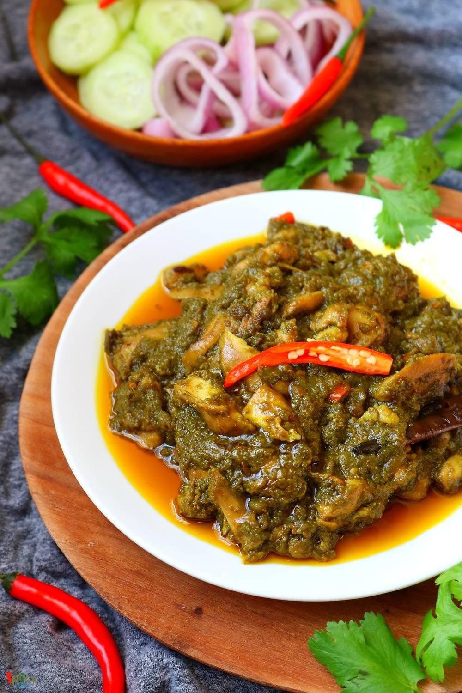
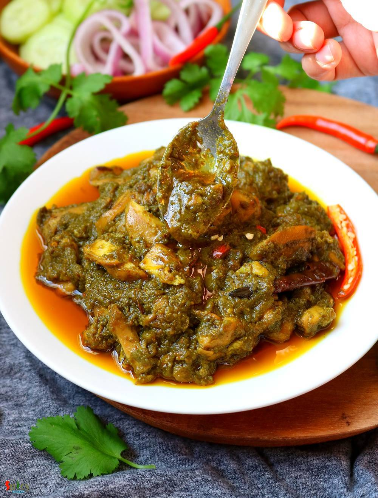

Simple and Easy Recipes
Palak Chicken / Chicken cooked with Spinach puree
© 2016 Spicy World, Published on: Apr 9, 2020
With Chicken you can make so many types of gravy. It is one of the friendly ingredient to me. Palak chicken is a healthy chicken recipe in which chicken will be cooked in spinach gravy. You can definitely add fenugreek leaves, mustard leaves along with spinach if you want to make it healthier. Palak Chicken is an amazing semi thick curry which can be enjoyed with roti, paratha or rice.

Ingredients
- 700 grams of chicken (boneless or withbone).
- Slices of 3 onions.
- 3 Tablespoons of ginger garlic paste.
- 2 medium tomatoes, cut into pieces.
- Salt and sugar as per your taste.
- 250 grams of spinach leaves.
- Spice powder 1 Tablespoon of each (turmeric powder, red chili powder, roasted cumin and coriander powder).
- 1 Tablespoon of garam masala powder.
- 1 Tablespoon of chat masala powder.
- 2 green / red chilies, chopped.
- Whole spices (3 dry red chilies, some cumin seeds, 2 green cardamom, 1 small cinnamon stick, 2 cloves).
- Half cup of mustard oil.
- 2 Tablespoons of ghee.
- Water as required.
- 3 Ice cubes.


Steps
In a pot, boil 2 cups of water.
Add spinach leaves, cook for 2-3 minutes.
Immediately drain the water.
Add normal tap water and ice cubes to the drained spinach.
After 2 minutes again drain the water and make a smooth paste (puree) out of the blanched spinach.
In a wok or kadai, heat mustard oil.
Add all of the whole spices, saute for few seconds.
Then add sliced onion and some salt, fry until it becomes golden in color.
Add ginger garlic paste, cook for 2-3 minutes.
Then add chicken pieces, cook for 5 minutes on high flame.
Then add all of the spice powder, mix well and cook on medium flame for 5 minutes.
Add chopped tomatoes, salt and sugar, mix well and cook on low flame for 20 minutes.
If the chicken dries little bit then add some hot water.
Add the spinach puree, mix well and cook until the chicken becomes soft and the gravy becomes semi thick.
Lastly add chopped chilies, garam masala powder, chat masala and ghee. Mix well and turn off the heat.
Let it rest for 30 minutes then serve.
Your palak chicken is ready to serve.
Serve this hot with naan or plain chapati ..
")